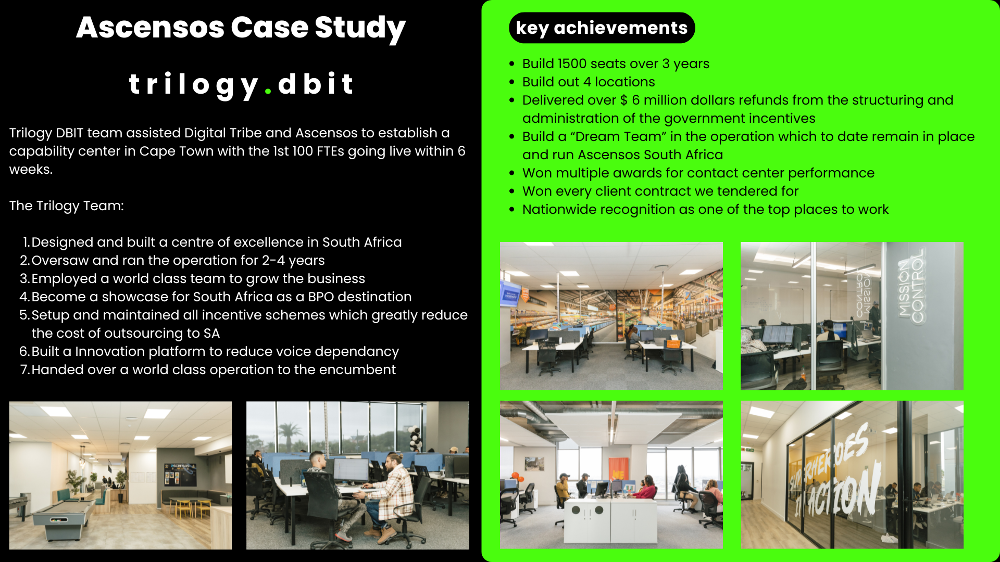

Digital Tribe / Ascensos — Cape Town capability centre

Ascensos DBIT — design, build, operate and hand over a world-class Cape Town operation.
Trilogy’s DBIT team assisted Digital Tribe and Ascensos to design and build a centre of excellence, oversee and run the operation for two to four years, and hand over a world-class platform to the incumbent.
- First 100 FTEs live within six weeks.
- 1,500 seats over 3 years across 4 locations.
- Leadership team still running Ascensos South Africa.
- Multiple contact-centre awards; nationwide recognition as a top place to work.
- Incentive structuring that reduced the cost of operating in SA.
6 weeksto first 100 FTEs
1,500seats / 4 sites
2–4 yrsoperate then hand over
Retail DNAUK brands at scale